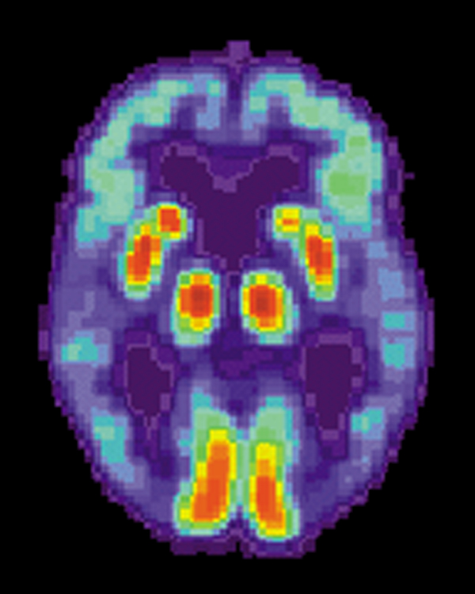

Do the new Alzheimer's drugs actually work?
In a landmark 2023 trial, a drug called donanemab scrubbed the amyloid plaque out of people's brains and slowed their decline by about a fifth to a third. The benefit is real. So are the brain bleeds, the cost, and the argument over whether it's enough.

For almost thirty years the drugs we had for Alzheimer's didn't touch the disease. They nudged the symptoms for a while, the way a cough drop soothes a cold without curing it, and then the slide continued. Part of the problem was that nobody could agree on what to aim at. The leading suspect was a protein called amyloid that clumps into hard plaques in the spaces between neurons, but drug after drug that cleared the plaque failed to help patients, and some scientists began to wonder whether amyloid was really the cause of Alzheimer's or just wreckage left at the scene.
This 2023 trial, run by Eli Lilly and published in the journal JAMA, is one of the studies that shifted that picture. The drug is donanemab, an antibody that finds amyloid plaque and clears it out. The question was simple and long overdue. If you actually scrub the plaque away, does the disease slow down.
The question
Alzheimer's is the most common cause of dementia, and it tends to take recent memory first, the names and the appointments and the morning's conversation, while older memories and skills hold on longer. Underneath that, two things pile up in the brain. Amyloid forms plaques outside the cells, and a second protein called tau forms tangles inside them. For decades the big bet, known as the amyloid hypothesis, was that the plaque comes first and sets the whole disease in motion. The trouble was that clearing it had never clearly helped anyone. This trial was a clean test of that bet. Take the plaque out and watch what happens.
What they did
They enrolled 1,736 people with early Alzheimer's, the stage where memory problems are real but daily life is still mostly intact. Everyone had to have confirmed amyloid in the brain, measured with a PET scan, so this wasn't a trial of people who merely seemed forgetful. Half got donanemab through an IV once a month, and half got a placebo. It ran for 18 months.
Two parts of the design were unusual and worth knowing. First, they also scanned each person for tau, the second protein, and singled out the group with low to moderate tau ahead of time. The thinking was that people earlier in the disease, before tau has spread widely, might have the most to gain. Second, the dosing had a finish line. Once a person's scans showed the plaque was essentially gone, they were switched to placebo. The idea was that you clear the plaque, then you stop, rather than taking the drug forever.
To track whether it was working they leaned on two standard measures of decline. One blends memory and daily function into a single score, and the other, called the CDR-SB, rates how much help a person needs across things like memory, judgment, and managing at home, on a scale from 0 to 18 where higher is worse. They also used the brain scans to watch the plaque itself shrink.
What they found
The plaque came out. By the end of the trial about 80 percent of the people on donanemab had so little amyloid left that they would no longer test positive for it, which is a striking thing to do to a brain with a drug. On that count it plainly worked.
The decline slowed too. Across the whole group, people on donanemab got worse about 22 percent more slowly than people on placebo, and in the earlier, low-to-moderate tau group the gap was larger, around 35 percent. People who started earlier in the disease got more out of it, which fit the idea behind the design.
Here's the catch, and it's the number the whole debate turns on. On that 0 to 18 scale of how much help a person needs, the difference between the drug group and the placebo group at 18 months was about seven tenths of one point. Donanemab didn't stop Alzheimer's or reverse it. It slowed the worsening, and over a year and a half that added up to a fraction of a point of preserved function. Whether that fraction is something a family would notice at the kitchen table is a real and unsettled question.
The fine print
Clearing the plaque isn't free, and the cost shows up in the brain. The antibody can make the brain's blood vessels leaky, which leads to swelling or tiny bleeds. The umbrella term for it is ARIA. Some form of swelling showed up in about a quarter of the people on donanemab, against about two percent on placebo, and small bleeds in about a third, against roughly one in eight. Most of it caused no symptoms and was caught only on scans, but not all of it. A small number had serious episodes, and three deaths in the trial were tied to the drug, all three following ARIA.
The risk isn't spread evenly. People carry different versions of a gene called APOE, and one version, APOE4, raises the odds of Alzheimer's in the first place. It also raises the odds of ARIA on this kind of drug. In the trial the swelling rate climbed from about 16 percent in people with no copy of APOE4 to roughly 41 percent in people with two copies. That's why the label tells doctors to test a patient's APOE status before starting, so the highest-risk people go in with eyes open. There's also encouraging follow-up here. A 2025 study found that easing patients onto the drug more slowly cut the swelling rate by about 40 percent, from roughly a quarter of patients to about one in seven, while keeping the plaque clearance, so the safety picture is already improving.
So does it work
The honest answer is yes, modestly, and at a price. It clears the plaque, that part isn't in doubt. It slows the disease, and the slowing is statistically solid. The argument is over size and cost. The benefit is under a point on an 18-point scale, the side effects are real, and the drug runs about 32,000 dollars a year before you add the infusions and the repeated brain scans to watch for bleeding. In the United Kingdom the agency that decides what the health service will pay for looked at all of this and concluded the benefit was too small for the cost and declined to fund it. The United States approved it in 2024 under the name Kisunla. Reasonable experts are landing on different sides of the same numbers, which tells you the effect sits right at the edge of what we'd call worth it.
Why it matters
Step back from the bedside math and the trial did something the field had been chasing for almost thirty years. It showed that taking the amyloid out actually changes the trajectory of the disease, even if only by a little. After years of failures that had people doubting the whole amyloid hypothesis, that's real evidence the plaque is part of the cause and not just a bystander. Donanemab and its close cousin lecanemab are the first drugs to slow Alzheimer's itself rather than mask it, and they're almost certainly a clumsy first generation. The value of a first-generation drug is often less the drug and more the proof that the target was right.
What it doesn't mean
It's worth being careful about what this is. It isn't a cure, and it isn't for everyone with memory trouble. The trial was in people with confirmed amyloid and early, mild disease, so it says nothing about someone with advanced dementia, and a brain scan or a newer blood test is needed just to know if the drug has anything to act on. It doesn't undo damage that's already done. And the soluble amyloid that feeds those plaques is the kind of thing your brain seems to flush out a little on its own during deep sleep, at least in animal studies, a reminder that this is one crude intervention into a slow process the body was already trying to manage on its own. What the trial gives us is narrower and more important than a headline cure. It's proof that the target was real.
It didn't stop Alzheimer's or reverse it. It cleared the plaque and slowed the slide by a fraction of a point. The argument is whether that fraction is enough.
The picture worth keeping
That's the image to hold onto. A drug that can walk into a living brain and clear out the plaque almost completely, and at the end of a year and a half the person is still declining, just a little more slowly. It's both a genuine breakthrough and a humbling one. For the first time we can change the course of this disease, and the size of the change shows how much further there's to go.